歡迎來到 PHP雲端ERP 的世界
PHP 是開發 雲端ERP 應用程式的工具組。提供簡易的介面和邏輯結構來使用豐富的函式庫，其目的是讓你加 快開發速度。使用 PHP 只需要寫少少的程式，創造力可專注在專案開發。
雲端ERP 使用手冊目錄
貳、基本資料建立
一、基本資料管理系統之關連作業
1.共用參數設定作業
■程式代號：CMSI01
■作業目的：系統上線前基本參數設定，未設定者無法輸入異動資料。
■輸入畫面：
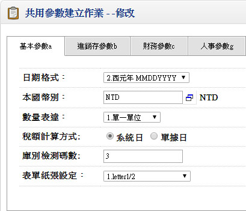 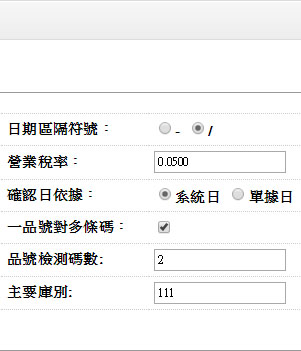▼
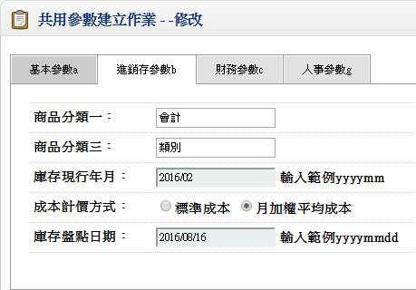- ■欄位說明：
- 確認日依據：
- 異動單據確認時;單據上確認日認定之日期來源
- 數量表達方式
- 單一單位：如選擇此項，則各異動單據只輸入一個異動單位數量
- 雙單位：如選擇此項，則偏向買賣業之運用，有大小單位之管控，則各異動單據需輸入異動單位及小單位數量，而大小單位間有固定之換算比率關係
- 製造雙單位：如選擇此項，則偏向製造業之運用，有同時管控二個異動單位，則各異動單據需輸入異動單位及包裝單位之數量，異動單位及包裝單位之間不一定存在有固定之換算比率關係
- ※製造雙單位之系統處理原則：：
- 限制條件：
- 共用參數設定檔中,數量表達方式設定為:3.製造雙單位,才會有此功能。
- 若為3.製造雙單位,則包裝單位都不可修改。
- 處理邏輯：
- 所有建檔程式判斷共用參數設定檔中,數量表達方式是否設定為:3.製造雙單位,若不是則所有關於包裝數量之欄位皆隱藏;若是則顯示該欄位
- 所有憑證程式判斷共用參數設定檔中,數量表達方式是否設定為:3.製造雙單位,若不是則所有關於包裝數量之欄位皆隱藏;若是則顯示該欄位
- 所有報表程式則不判斷共用參數設定檔數量表達方式;所有包裝數量之欄位皆顯示,再用自定報表儲存其所需之格式
- 品號基本資料檔,該品號要設定為有定重,且包裝單位不是空白,才會計算包裝數量;否則將包裝數量DEFAULT 為零
- 單據建立時,判斷該品號是否有包裝單位,若沒有包裝單位則所有包裝數量之欄位都 DISPLAY ONLY
- 檢驗狀態之判斷,不考慮包裝數量;依原數量作判斷
- 數量之計算方式:
- 輸入數量會判斷該品號是否定重,若有定重且包裝數量=0,才會計算包裝數量
- 輸入包裝數量會判斷該品號是否定重,若有定重,才會計算數量
- 包裝數量可以作批號管理,控制庫存不足不可出庫,數量超收
- 所有金額之計算,依計價數量*單價=金額
- 所有數量欄位皆有對應之包裝數量欄位,但沒有計價包裝數量
2.廠別資料建立作業
■程式代號：CMSI02
■作業目的：
- 廠別資料為庫存，或商品異動相關報表資料的篩選條件，如計有三個工廠，每一工廠有四個庫別，在產生庫存明細表及進耗存統計表等相關報表產生時，均可用廠別來篩選條件。當然將來在執行MRP/LRP(物料需求計畫--生產計畫系統) 時廠別亦是一個重要資料區隔或篩選條件。
- 為配合全球ERP的管理，如果你只有單一製造廠管理，亦請您設定一個廠別代號來標示，在本系統的銷貨及採購系統的異動單據（銷貨單、銷退單、進貨單、退貨單…等）輸入時必須指定廠別。
■輸入畫面：
3.庫別資料建立作業
■程式代號：CMSI03
■作業目的：商品存貨儲存倉庫，期初上線時請將庫別資料先行建立，再進行庫存系統的「品號資料建立」。
■輸入畫面：
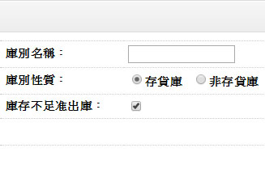- ■欄位說明：
- 庫別性質
- 分存貨倉及非存貨倉二種。若有一品號採標準成本制，標準成本為@5元在存貨倉有 100PC，在非存貨倉有5PCS，則本品號的存貨價值為500元，您可於「品號資料建立作業」單身看到二筆資料，但是在單頭的數量為100成本為500元。
- 以製造業來說：
非存貨倉指本倉庫的商品計不計入庫存成本，如：有些製程
不良的料件或商品，這些商品已經記入當期的製造成本，所
以這些商品縱有庫存數量，都不應再計入存貨成本重複計
算，所以這種報廢倉稱為非存貨倉。
- 如一些製造工具（手動起子、板手），納入本系統進行存貨管制，而這些商品只管制數量不管制商品價值，則可以另設一種倉庫可稱為工具倉，則此倉應設為非存貨倉。
- 本系統亦提供服務性商品的銷售管理，比如說提供顧問諮詢、維修、設備拆解的服務，使用者可記錄服務的次數及價值，但對於總金額部份納入存貨是沒有意義的，所以這種倉庫亦為一種非存貨倉。
- 納入可用量計算
- 此倉庫的數量是否可納入可用量來累加
- 庫存量不足准許出庫
- 定義：簡單來說是當庫存數量為0時，可不可以執行出庫相關的單據核准呢？
以存貨為零，銷貨100 PC，如果設為【庫存量不足准許出貨】，表示允許庫存為【-100】PC，造成庫存餘額為「負」值。當然這是一種不合理的現象，但是對一些製造業而言，銷貨單在商品生產入庫前，是必須先行備單核准，如果將單據設為庫存量不足准許出貨，則表示銷貨單核准時一定要有存貨 - 一般來說只有製造業的成品倉庫才有設定允許庫存數量不足可以出貨的考量，一般的倉庫尤其是買賣行為的行業，他的倉庫管理主要是針對存貨者，均應設為庫存不足不可出貨
4.生產線資料建立作業
■程式代號：CMSI04
■作業目的：生產線乃定義廠內生產排程或製造成本計算時商品製造費用分攤基礎的單元，有關成本資料應於「成本計算系統」上線時將資料準備完成並補輸入。
■輸入畫面：
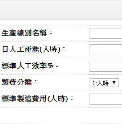- ■欄位說明：
- 每日人工產能
- 生產線每日的可用人工小時數。
如果本生產線計有20人，每人每日平均出勤工時為7.5HR，則請輸入150HR，本欄位為本產品相關計算產能負荷的基礎資料（生產計劃及製令製程系統），如果您不做負荷管理則本欄位可不輸入。 - 每日機器產能
- 每日機器產能
設定本欄位時，請留意，先前我們說這是計算負荷的基礎，人工是可因派工的手工將不同職能的時數累加，但是不同機器似乎就無累計的效果，例如3台車床及1台鉆床，每天可以工作7.5HR，您只能選擇車床或鉆床的負荷來當成此生產線負荷，不該全部用7.5×4＝30HR來輸入。 - 製費分攤依據
- 1.人時、2.機時、3.人工
本欄位設定主要是在「成本計算系統」時，定義此條生產線的製造費用分攤基礎。 - 標準人工成本
- 本欄位亦是成本計算系統的需求欄位，一般而言在計算產品的單元成本時，是採用當月份的實際支付薪工來做為實際人工成本的基礎，但是如果對某些企業，該實際成本無法取得，只能取得投入的工時，而想要以標準人工成本及實際工時來概估產品的人工成本時，您就必須於生產線中輸入本欄位值。
- 標準製造費用
- 本欄位亦是製費計算系統的需求欄位，一般而言在計算產品的單元費用時，是採用當月份的實際支付薪工來做為實際人工製費的基礎，但是如果對某些企業，該製造費用無法取得，只能取得投入的製費，而想要以標準人工製費及實際工時來概估產品的製造費用時，您就必須於生產線中輸入本欄位值。
<<單頭>>
5.部門資料建立作業
■程式代號：CMSI05
■作業目的：將公司內組織部門編號輸入，可作為分析之分類，或作資產分攤部門。
■輸入畫面：
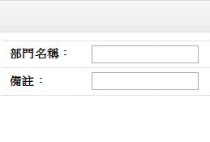6.職務類別建立作業
■程式代號：CMSI09
■作業目的：將公司之員工作職務之歸屬，對相關欄位只可提供特定的職務人員所輸入。
■輸入畫面：
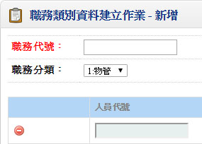 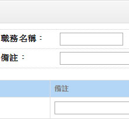7.常用摘要建立作業
■程式代號：CMSI12
■作業目的：對常用之摘要資料可依個人或共用方式先行建立,於一般備註欄位可以直接取用,提高輸入效率。
■輸入畫面：
8.註記/簽核資料建立作業
■程式代號：CMSI17
■作業目的：對常用之註記及簽核可先行建立,可於列印憑證或報表取用。
■輸入畫面：
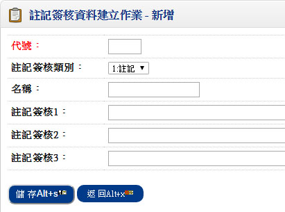9.品號資料建立作業【庫存管理系統】
■程式代號：INVI02
■作業目的：存貨及銷售商品的基本資料。
■輸入畫面：
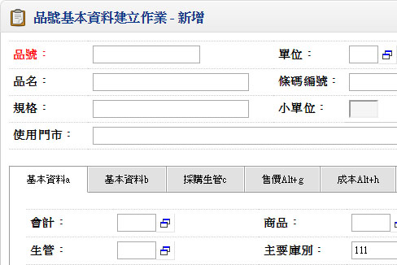二、本系統的基本資料
1.BOM用量資料建立作業
■程式代號：BOMI02
■作業目的：建立產品用量組成。
■輸入畫面：
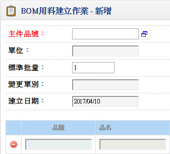 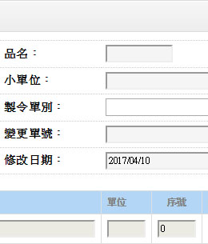- ■欄位說明：
- 標準批量
- 標準值為1；此欄位必須大於0
- 此主件在生產時慣用之標準生產批量。對於電子、機械類裝配產品，如果其成本較低或生產速度較快或習慣之銷售方式是採較大批量或生產時因規模因素而有經濟批量之考慮限制時，可能需要對該產品設定生產標準批量。另外，對於化學配方等產品，由於製造時所使用之設備、反應爐等有容量之限制，故亦可能需要設定一產品之標準生產批量。標準批量之設定不僅是生產批量之依據，同時亦是其材料用量資料建立之依據；亦即該產品對於所需材料之用量應該係指生產該標準批量之產品而言。在建立其用料資料時必須特別注意此點。
- 製令單別
- 此一主件生產時所開立之製造命令單別。在生產 計劃系統中，如果此一主件需要生產，則系統將以此一製令別自動開立製造命令。
- 單別資料需於製令系統單據性質建立中先行建立，再取用。
- 變更單號
- 若料件有經過工程變更時，會將工程變更單號記錄在此欄位
- 變更日期
- 工程變更的日期
- 版次
- 工程變更的最後版次
- 序號
- 一主件乃由許多元件材料所組成，故需以序號區別之，如0010，0020，0030...等。在輸入時，序號將自動以１０進位方式賦予，以方便日後可以插號補入新增之元件。
- 元件品號
- 如果主件品號的屬性為Feature件或Option件，則元件品號不可同為Feature件或Option件。
- 組成用量
- 表示一『標準批量』之主件所需使用到一元件之數量。應注意此組成用量並不包含生產過程中之損耗在內。
- 底數
- 用來計算組成用量之分母。對於某些材料如包裝材料中之內包裝盒或外包裝箱等，因為其使用情形往往如『１２個產品以１個外包裝盒包裝』，而『１２個內包裝盒以１個外包裝箱包裝』故其對於１個產品之內包裝盒之組成用量應為『0.08333..』，而外包裝箱之組成用量則應為『0.006944..』。由於組成用量以小數表達對於閱讀時不能一目瞭然，易生混淆，同時遇到上例不能整除之現象則有產生誤差之困擾。故此類材料之用量表達不妨以分數方式，如上例之內包裝盒其組成用量可設為１，而其底數為１２；外包裝箱之組成用量亦設為１，其底數則設為１４４。不僅表達明確，且可以避免誤差之發生。
- 損耗率%
- 一元件在生產製造一主件之過程中之標準損耗率
- 製程
- 表示一組成元件在實際生產或備料時，其所需使用到之先後順序
- 投料時距
- 生產一主件時，會有分段投料之控管時，可區分不同之投料時距，開立製令時，用料之預計領料日就會依不同投料時距推算。
- 生效日期
- 表示一主件之組成元件資料自此日期開始生效。
- 失效日期
- 表示一主件之組成元件資料自此日期開始失效。
- 選配預設
- 主件品號屬性為Feature/Option件時才可輸入
- 用於Feature/Option件訂單轉母製令時可將選配預設值為'Y'之元件帶出，若主件為Feature件則單身僅能有一筆元件預設值為'Y'，若為Option件則無限制。
- 標準成本計算
- 標準成本計算時單身元件成本如要納入計算此欄位需勾選。
- 若主件品號為Feature/Option件則且選配預設欄位值為'N'時，欄位不可輸入。
- 材料型態
- 預設值1.直接材料、2.間接材料、3.廠商供料、4.不發料
- 廠商供料與不發料不作領料處理，領料單一製令展料時，廠商供料與不發料不展出
- 若已有工程變更單號時則資料不可刪除
- 當有資料新增或修改存檔時，將共用參數設定檔.更新低階碼寫入'Y'
- 單身元件之失效日期不可和生效日期相同或在生效日之前
2.單據性質設定作業
■程式代號：BOMI03
■作業目的：
- 凡於產品結構系統所使用的單據如工程變更單、組合單、拆解單、工程BOM變更單等，必須先於本作業編設單據代碼及相關基礎資料，以方便日後異動單據輸入。
- 作業一經設定請勿隨意修改，必須修改時，請保持在單一使用者狀況修改。
■輸入畫面：
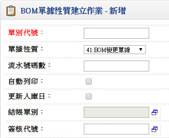
3.產品途程資料建立作業(庫存管理系統)
■程式代號：BOMI07
■作業目的：產品標準途程建立，一產品可設定多種途程，為開立製令製程之資料來源
■輸入畫面：
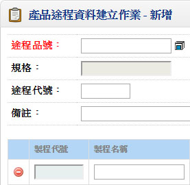 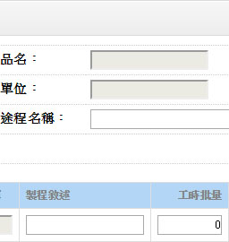- ■作業說明：
- 加工順序
- 不可為空白
- 可修改
- 為每10號為跳號單位。例:0010、0020.....，方便中途插入加工順序用
- 工時批量
- 收集變動人時機時之批量
- 固定人時
- 加工此工序固定之人工準備時間
- 變動人時
- 加工此工序一工時批量所需人工時間
- 固定機時
- 加工此工序固定之機器準備時間
- 變動機時
- 加工此工序一工時批量所需機器時間
- 移轉批量
- 收集變動天數之批量
- 固定天數
- 加工此工序固定之準備天數
- 變動天數
- 加工此工序一移轉批量所需天數
- 落後天數
- 落後前一工序預計開工日期之天數
- 計算開工日期
(設定0表此上加工序完成後，此一加工序才開工，設定1以上為需求的開工日數，小於0.5表與上一加工序之開工日期+1為此加工序之開工日) - 加工單價
- 此加工序為託外性質所計加工費的單位設定
- 加工單位
- 此加工序為託外性質所計加工費的單位設定